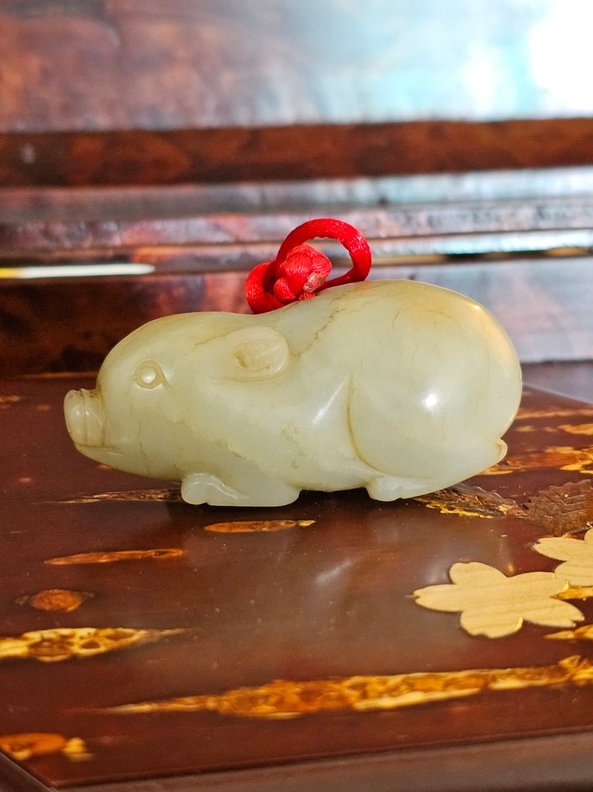
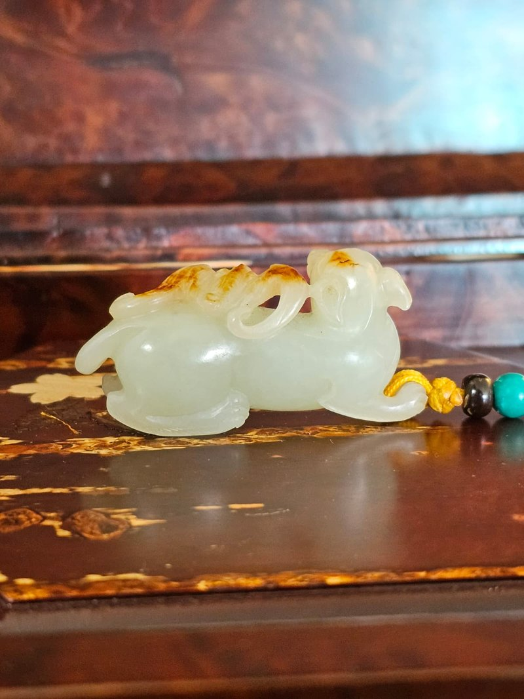
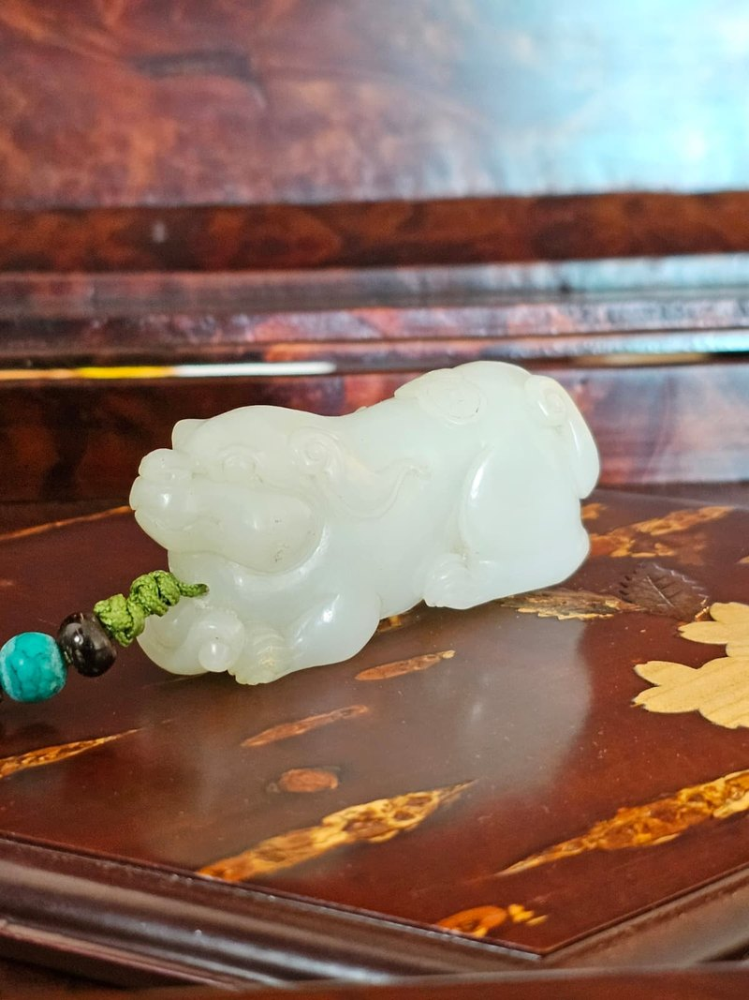
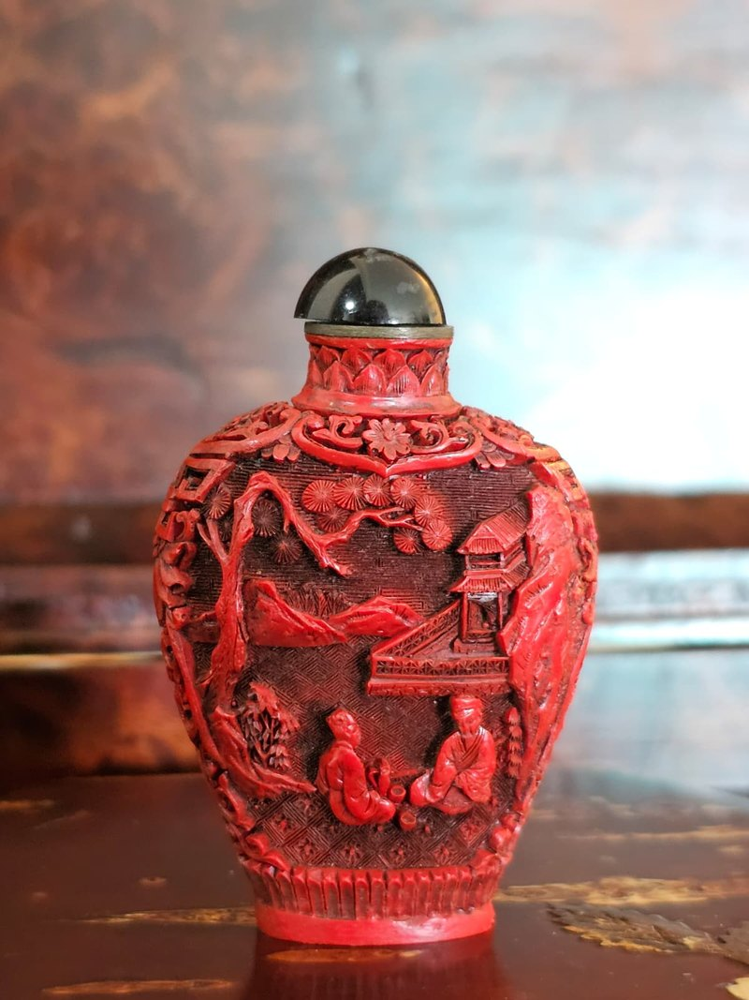
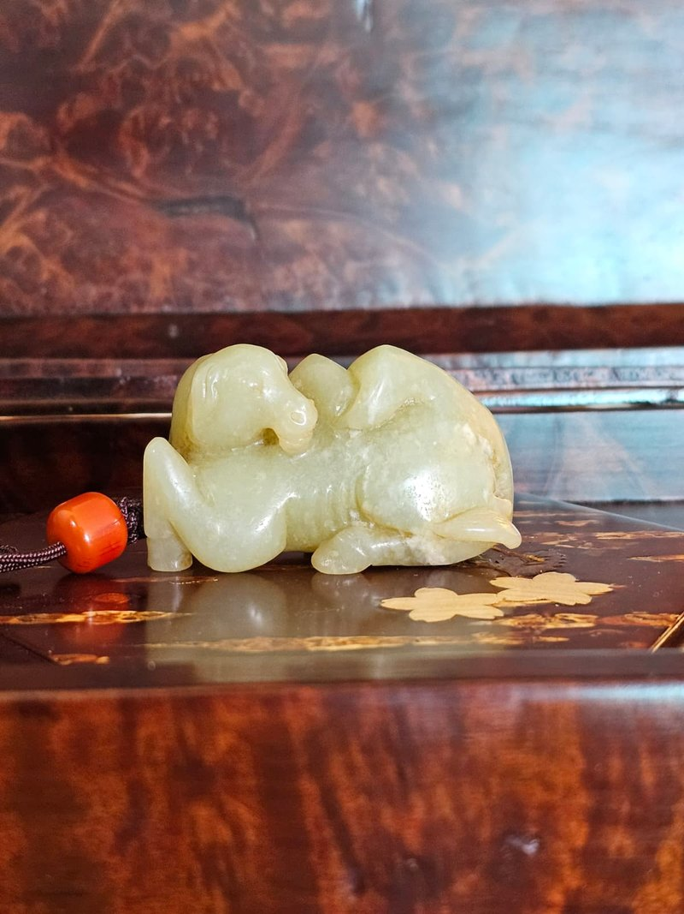

藏品目錄
十五件藏品
每件均附獨立藏品鑑定檔案。價格面議，歡迎就任何一件預約私人鑑賞。
J-017

細閱藏品→
唐代風格 · 白玉
白玉「馬上封侯」
White Jade 'Horse and Monkey'
103×30×70 mm336 g
J-008

細閱藏品→
戰漢風格 · 白玉
地方白玉「府上有龍」
Regional White Jade 'Dragon in the Mansion'
105×60×28 mm161 g黑檀木珠及編繩
J-016

細閱藏品→
近代工藝 · 翡翠・碧玉
天然碧玉「郁綠圓滿」83粒珠串
Natural Spinach Jade Necklace, 83 Beads
展開 520 mm／扣起 250 mm30.85 g83 粒
J-012

細閱藏品→
民國風格 · 黃玉
淡黃玉「富貴肥豬」
Pale Yellow Jade 'Prosperous Pig'
67×25×32 mm86 g
J-006

細閱藏品→
清代風格 · 黃玉
淡黃玉帶皮籽料「狐蝠雙瑞」
Pale Yellow Jade Pebble 'Fox and Bat'
65×14×32 mm53 g
J-009

細閱藏品→
具唐宋風格 · 白玉
灰白玉「和合二仙」
Grey-White Jade 'He-He Twin Immortals'
90×50×25 mm133 g
J-011

細閱藏品→
宋代風格 · 白玉
白玉「右軍愛鵝」
White Jade 'Wang Xizhi and the Goose'
50×48×28 mm81 g
J-010

細閱藏品→
清代風格 · 白玉
白玉「瑞犬抱寶．代代有錢」
White Jade 'Auspicious Dog Embracing Treasure'
70×20×34 mm92 g
J-007

細閱藏品→
清末民初風格 · 白玉
白玉帶皮「喜鵲登梅．竹報平安」
White Jade with Skin 'Magpie on Plum, Bamboo Reports Peace'
60×42×20 mm57 g翡翠玉扣及掛頸編繩
J-005

細閱藏品→
清代風格 · 白玉
白玉帶皮籽料「靈羊跪臥」
White Jade Pebble 'Kneeling Ram'
75×38×25 mm118 g
J-015

細閱藏品→
近代工藝 · 翡翠・碧玉
翡翠「歲歲平安」平安扣
Jadeite 'Peace Buckle' Disc
20×20×4 mm3.15 g
J-014

細閱藏品→
近代風格 · 翡翠・碧玉
翡翠「魚躍靈芝．富貴滿籃」花件
Jadeite Openwork Pendant 'Leaping Fish and Lingzhi'
40×23×18 mm18 g
J-004

細閱藏品→
明代風格 · 青玉
青黃玉「祥龍盤踞」
Celadon-Yellow Jade 'Coiled Dragon'
70×65×35 mm207 g巴西紅瑪瑙珠及編繩
J-013

細閱藏品→
民國風格 · 漆器・雜項
剔紅漆器「蘇式園林」鼻煙壺
Carved Red Lacquer 'Suzhou Garden' Snuff Bottle
70×48×27 mm36 g
J-018

細閱藏品→
年代待考 · 黃玉
淡黃玉「瑞獸負雛」圓雕手把件
Pale Yellow Jade 'Auspicious Beast with Young'
待量測待量測附紅瑪瑙珠及編繩